JoyAI-LLM Flash 是 JD.com 发布的一个中等规模 MoE 大语言模型， 核心目标是重新定义 sub-50B 参数区间内"性能"与"token 效率"的权衡。 其独特之处在于不只追求 benchmark 分数高，而是追求 用更少的输出 token 达到相当或更高的准确率—— 这直接对应推理成本和用户等待时间。
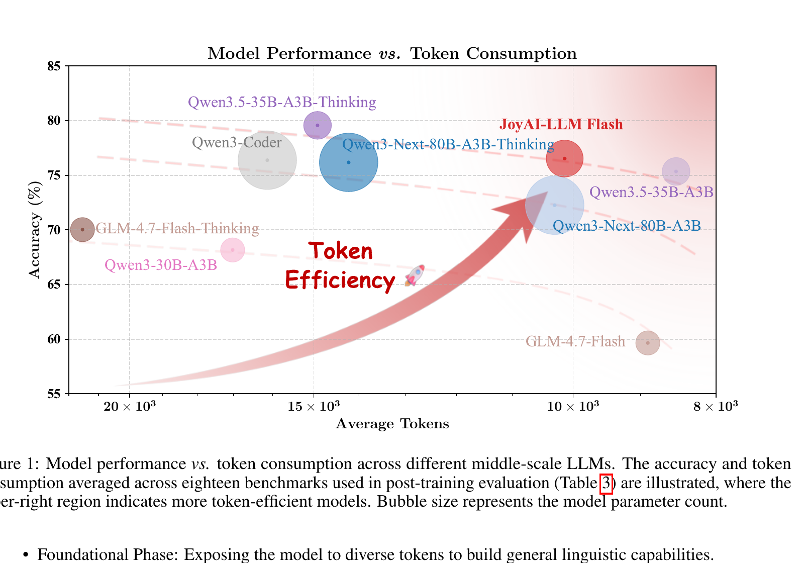
JoyAI-LLM Flash 的架构灵感来自 DeepSeek-V3 和 Kimi-K2， 采用细粒度 MoE + MLA 的组合。这是当前 sub-50B 规模最高效的架构配置之一。
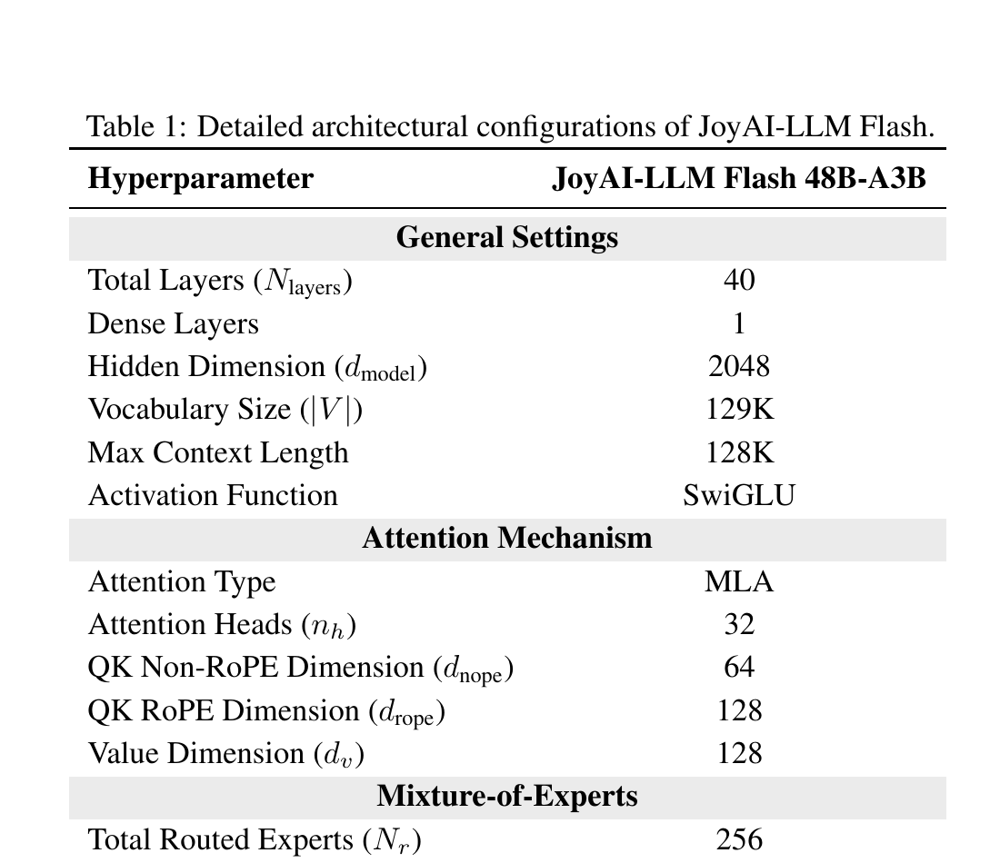
与 DeepSeek-V3 一致，使用低秩联合压缩 KV Cache，解耦 RoPE（NoPE 部分 + RoPE 部分）。 128K 长上下文下 KV Cache 显著小于标准 MHA。
每层 256 个路由专家 + 1 个始终激活的共享专家，每 token 激活 Top-8 + 共享专家（共 9 个）。 门控分数用 sigmoid + FP32 计算保证稳定性，使用无辅助损失的负载均衡策略。
不用 Adam 而用 Muon——通过矩阵正交化执行 Newton 风格的谱范数更新。 实验显示 Adam 训练多次出现 loss spike 需要人工干预，而 Muon 全程稳定无异常。
附加单层 dense MTP 头，训练时丰富学习信号，推理时原生支持投机解码加速， 无需外部 draft 模型。
训练语料来自四类源：Web 数据（Common Crawl 到 2025.10）、 代码仓库（The Stack v2 + GitHub）、高质量 PDF 文档（数千万篇学术/专业 PDF）、 大规模合成数据。
| 阶段 | 重点数据 | 学习率 | 上下文 |
|---|---|---|---|
| Stage 1 Foundational | 多样通用语料，100B warmup tokens | warmup→4.2e-4 | 4K |
| Stage 2 Code-Math | 重加权代码+数学数据 | 4.2e-4 → 1.4e-4 (cosine) | 4K |
| Stage 3 Mid-training | 超高质量 token，>60% 合成推理数据 | 1.4e-4 → 4.2e-5 | 4K |
| Stage 4 Context Ext | 长上下文 token | 4.2e-5 → 2.0e-5 | 64K → 128K |
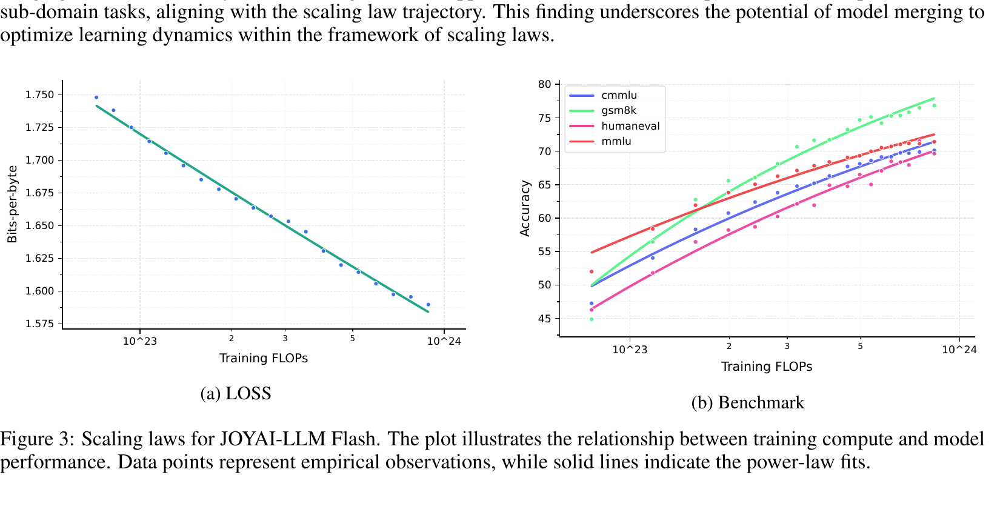
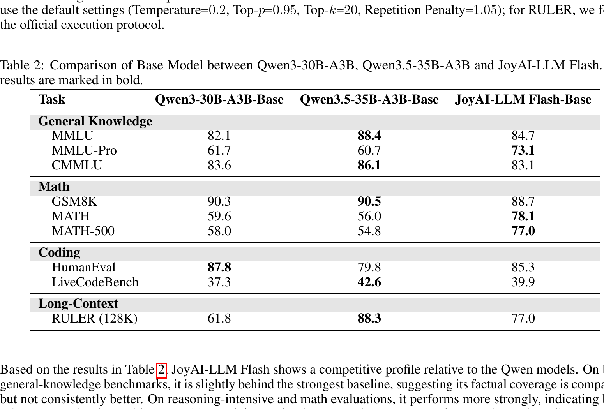
JoyAI-LLM Flash 将更大比例的计算预算投入到后训练， 使用 SFT → DPO → RL 三阶段流水线。 DPO 放在 RL 之前用于快速收敛惩罚负样本，也为 RL 提供稳定起点。
数学/代码/工具/指令/安全/Lean 定理证明/创作/角色扮演/多语言等。 用 Qwen3-30B-A3B 作为 filter 去除低质量 query。 故意混合 thinking 和 non-thinking 两种认知模式—— 实验证实 hybrid 训练显著增强了非 thinking 模型的性能。
SWE 任务通过"漏斗式训练"：GitHub Issue 挖掘 → 可验证环境构建 → 轨迹生成冷启动。 构建可验证 Docker 环境，Agent 自动构建镜像、运行测试、生成 P2P/P2F 标签。 12 种编程语言。
4 种专门 TIR 数据集：Code-Centric（Python 解释器，≤20 次调用）、 Search-Centric（平均 8.64 次搜索调用）、Hybrid（代码+搜索协同）、 Terminal-Centric（Docker 环境命令）。引入 summary agent作为搜索唯一接口，避免长上下文。
Best-fit packing 到 128K 上下文，padding 比率降至 0.01%， 使用块对角注意力掩码保持严格因果边界。整体训练吞吐提升 1.5×。
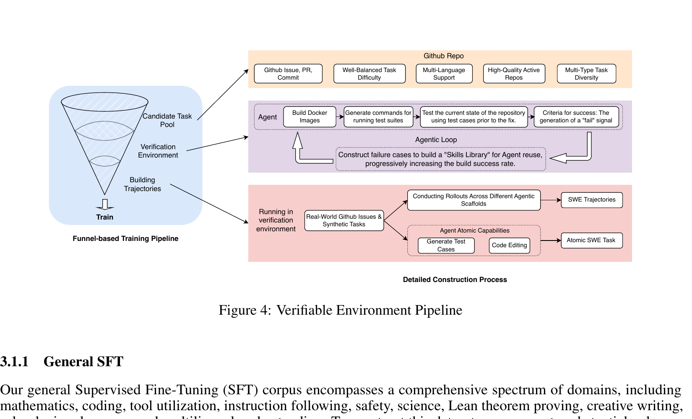
现代 LLM 是异构系统——agentic pipelines、MoE 条件路由、 分布式异步训练——在这种场景下 RLHF 的 PPO-style "proximal" 目标只提供粗粒度的局部控制 （主要是 per-token clipping），当问题来自全局结构（如轨迹漂移、专家分片）时无能为力。
FiberPO 建立在 Fibration Policy Optimization 的理论基础上—— 把采样的 RLHF 数据视作一个纤维丛（fiber bundle）结构： base space = 轨迹集合，fiber = 同一轨迹内的 token。 每个 token 的 log-ratio 被分解为两部分：
FiberPO 的目标函数采用乘法因式分解：
关键设计：
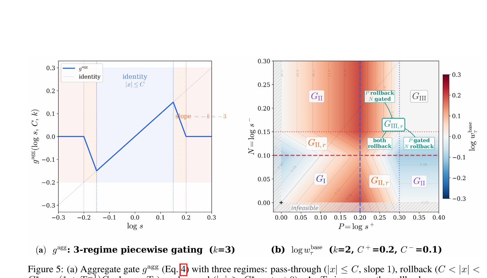
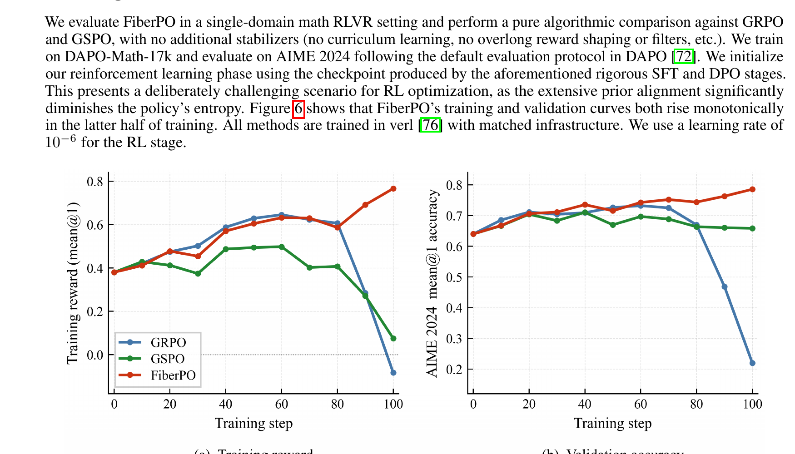
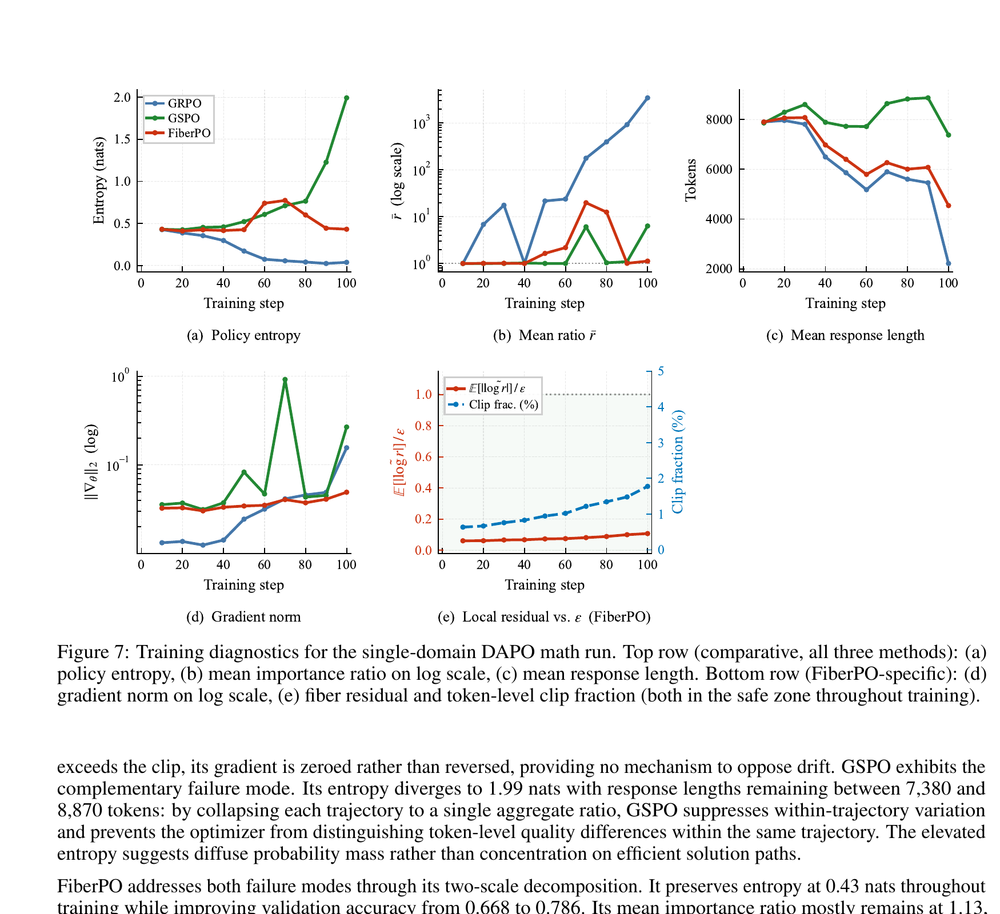
单域 RL 常导致 out-of-domain 能力退化（数学 RL 可能丢失指令跟随）。 FiberPO 通过 Gaussian curriculum 策略在多域上扩展：
每个 prompt 预先用 K=10 次 rollout 估计通过率 pi，然后训练期间动态聚焦当前目标难度。 Domain balanced 权重 αg ∝ √Ng 保持多域平衡。 FiberPO 的 per-trajectory 信任域天然泛化到异质 reward 分布——无需任何多域特殊调整即可实现跨域稳定增益。
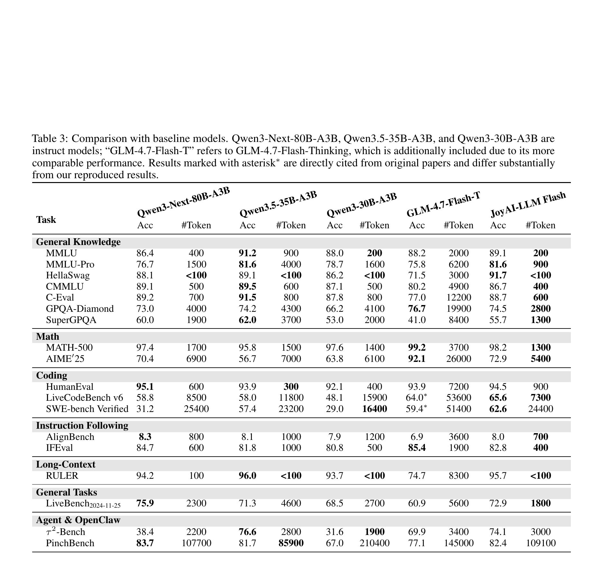
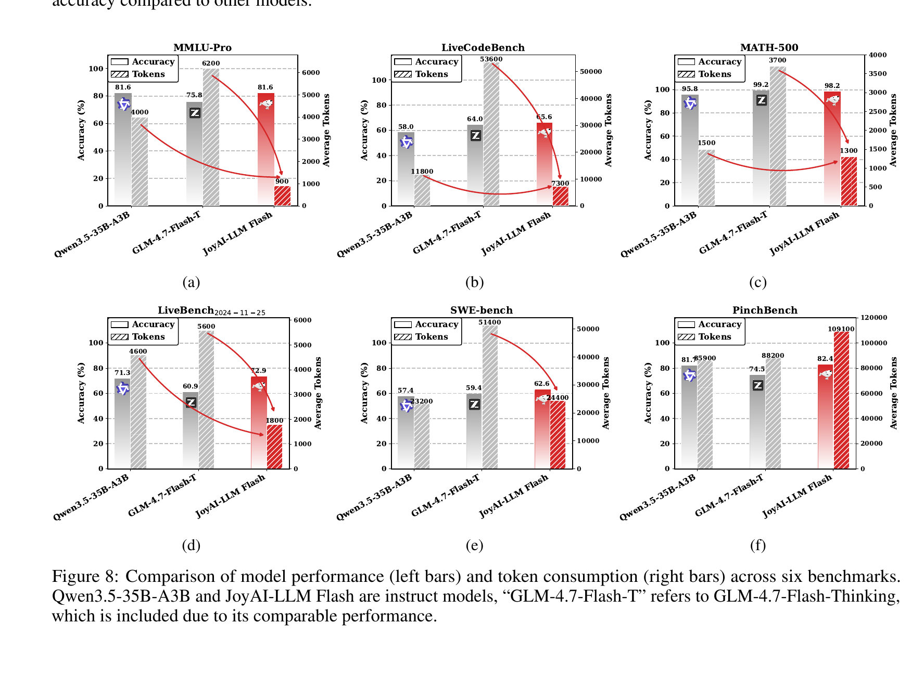
JoyAI-LLM Flash 同时采用 QAT 和 PTQ。QAT 阶段在训练中插入 fake-quantization (Quantize → DeQuantize → Quantize) 模拟 INT4 量化，用 Straight-Through Estimator (STE) 处理不可微的 rounding/clamping。
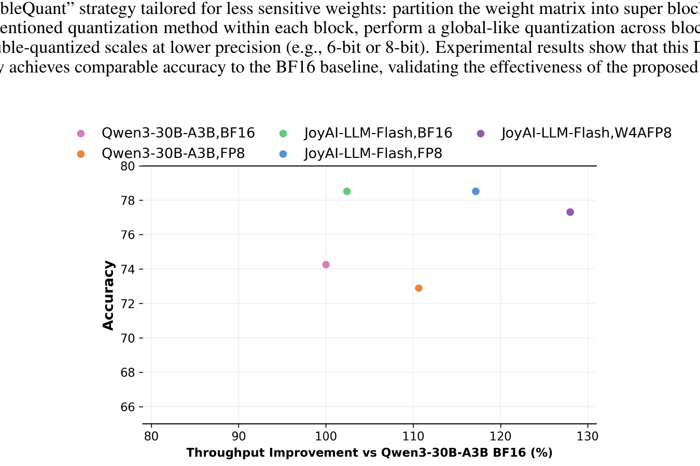
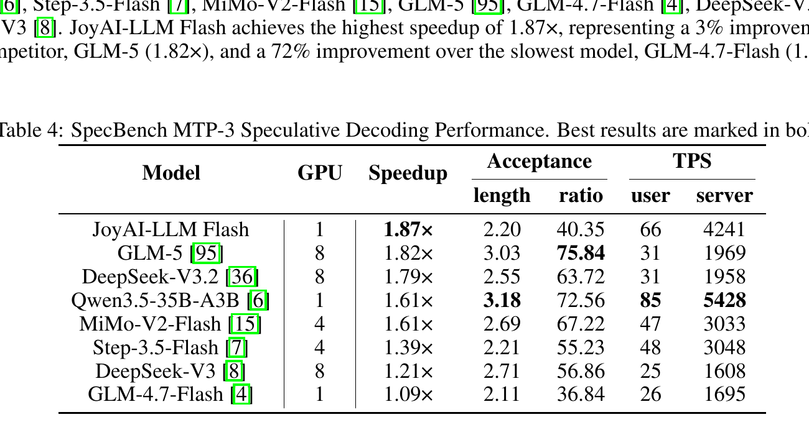
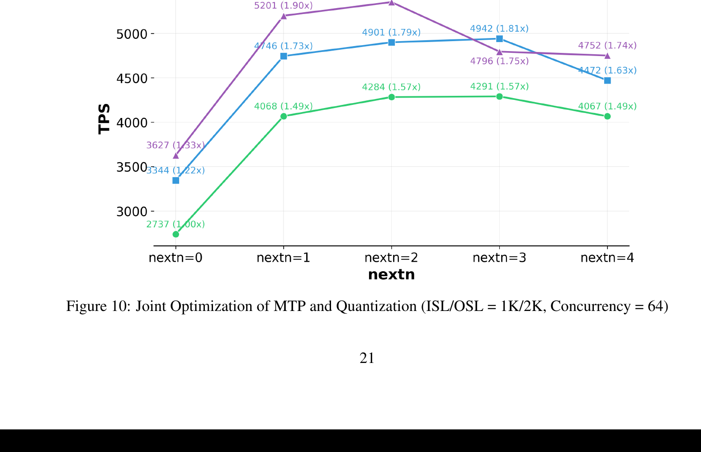
关心 TTFT + TPOT。建议 intra-node PD colocation 减少小模型的通信开销。AIConfigurator 动态调整 PD 实例比例匹配 SLA。
使用 PD disaggregation + Mooncake 集中 KV 缓存。 选择 P2P CPU 共享或 remote KV pooling 基于硬件；强烈不推荐 TCP 传输（延迟高）。
带宽充足时立即写到分布式 cache 层最大化命中； I/O 受限时减少写频率，使用 eviction policy 保留 hot data。
小模型对数据传输开销更敏感；即使 P2P RDMA 传输，延迟也可能超过重计算成本， 使集中 KV 管理成为负优化。需针对硬件做 crossover 分析。
首个将"token 消耗"与"准确率"作为联合 Pareto 前沿优化的中等规模 LLM。 所有训练决策（thinking/non-thinking 混合、FiberPO、MTP）都服务于这个目标。
基于 fibration 理论的新 RL 目标。把 token log-ratio 分解为 trajectory-level base weight 和 fiber-level gated residual，分别提供独立的 trust region。 严格解决 PPO/GRPO 在大漂移时的 token-level 区分崩溃问题。
故意在 SFT 中混合两种认知模式的数据。实验证明这种 hybrid 训练 显著增强了 non-thinking 模型的性能，而非期望的只对 thinking 模式有效。
训练-推理协同设计：MTP 头在预训练丰富学习信号，推理时天然支持投机解码。 W4AFP8 + next-n=2 实现 1.96× 加速，达到同规模最优。
发现 INT4 量化在 RL 阶段起到稳定器作用—— 收窄数值空间减少 rollout 噪声，提高鲁棒性。这是量化研究中少见的"量化反而有益"的发现。
256 细粒度专家 + Muon 优化器 + 20T tokens 四阶段课程， 在 MMLU-Pro / MATH / MATH-500 上超过 Qwen3.5-35B-A3B 等同规模模型。 基座 + 后训练共同驱动。
JoyAI-LLM Flash 在 sub-50B 参数区间重新定义了"性能"与"效率"的权衡： 不是更大的模型、不是更多的 token，而是更聪明的训练与推理协同。
未来方向：团队计划引入 continual learning 和 persistent memory，使模型能够动态适应并持续累积知识。